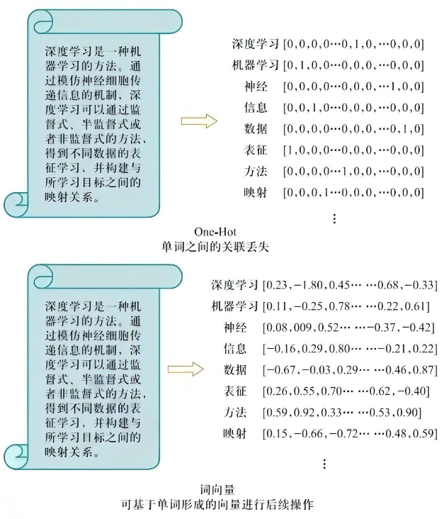
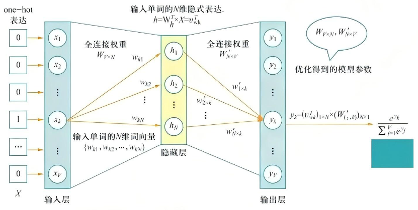
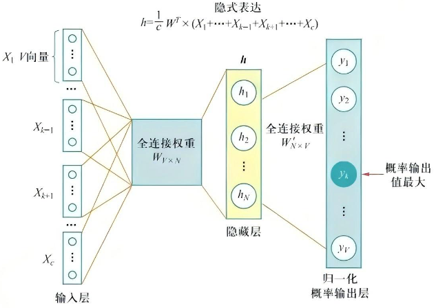
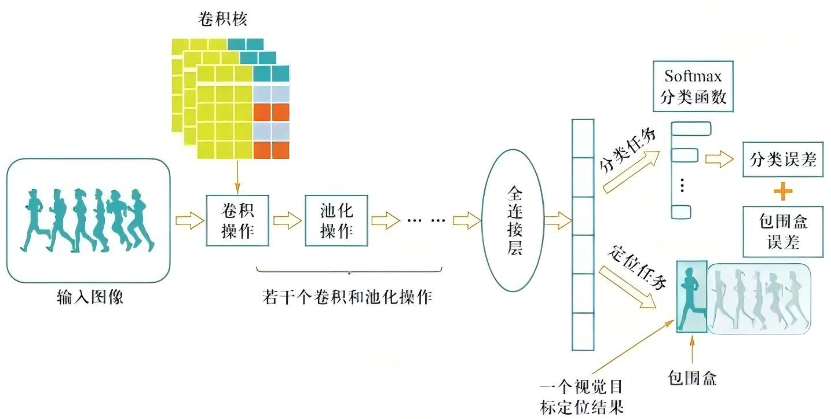

5.8
5.8.1 词向量模型
在基于规则和统计的自然语言传统方法中，通常将单词视为独立符号。为了表达文本，“词袋（bag of words）”模型被采用，但是这一模型忽略了文本单词之间的依赖关系，仅仅将文本看作单词的集合（忽略了单词之间的先后次序）。
在词袋模型中，一个单词按照词典被表示为一个词典维数大小的向量（称为 one-hot vector），向量中该单词所对应位置按照其在文档中出现与否取值为 1 或 0。1 表示该单词在文档中出现，0 表示没有出现（见图 5.23）。每个单词被表达为单词向量后，一些与自然语言相关的工作（如聚类、同义词计算、主题挖掘等）可以依次开展。

图 5.23 词模型与词向量模型表示文本
然而，随着文本数目增加，单词词典大小也会增加，从而使得词袋模型中每个单词的维数不断增加。因此，使用词袋模型表示单词时，往往会遭遇维度灾难问题。除此之外，这种表达方法无法有效计算单词与单词之间的语义相似度。例如，“高兴”与“愉快”两个单词的向量表达很不相同，虽然其具有很强的语义相似性。
为了刻画不同单词之间的语义相关性，研究人员希望使用一种分布式向量表达（distributed vector representation）对不同单词进行表达。利用深度学习模型，可将每个单词表征为 \(N\) 维实数值的分布式向量。这样一来，可以把对文本内容的分析简化为 \(N\) 维向量空间中的向量运算，如两个单词在向量空间中的计算结果可用来衡量这两个单词之间的相似度。用深度学习算法生成每个单词的向量表达，词向量（word2vec）是较为经典的模型。
假设词典中有 \(V\) 个不同的单词，现在考虑如何生成第 \(k\) 个单词的 \(N\) 维词向量（见图 5.24）。首先，将该单词表示成 \(V\) 维 one-hot 向量 \(\boldsymbol{X}\)，向量 \(\boldsymbol{X}\) 中第 \(k\) 个位置取值为 1，其余位置取值均为 0。隐藏层神经元大小为 \(N\)，每个神经元记为 \(h_i\ (1\le i\le N)\)。向量 \(\boldsymbol{X}\) 中每个 \(x_i\ (1\le i\le V)\) 与隐藏层神经元是全连接的，连接权重矩阵为 \(\boldsymbol{W}_{V\times N}\)。输出层是 \(V\) 维归一化的概率值，其中 \(y_k\) 对应第 \(k\) 个单词归一化的概率值，显然其取值应该远大于其他输出所对应的归一化概率值。
在图 5.24 中，输入层中 \(x_k\) 与隐藏层的连接权重为 \(\{w_{k_1},w_{k_2},\cdots,w_{k_N}\}\)，输入单词的 \(N\) 维隐式表达 \(\boldsymbol{h}=\boldsymbol{W}^\mathrm{T}\times\boldsymbol{X}=\boldsymbol{v}_{w_\mathrm{K}}\)。所得到的隐藏层结果与输出层是全连接的，全连接权重矩阵为 \(\boldsymbol{W}'_{V\times N}\)。从图中可知，第 \(k\) 个单词对应的输出为 \(y_k=\left(\boldsymbol{v}_{w_\mathrm{K}}^\mathrm{T}\right)_{1\times N}\times \left(\boldsymbol{W}'_{(:,k)}\right)_{N\times1}\)。这里 \(\boldsymbol{W}'_{(:,k)}\) 指的是从连接权重矩阵 \(\boldsymbol{W}'_{V\times N}\) 中取出第 \(k\) 列的向量。接着对 \(y_k\) 通过 softmax 函数进行归一化，得到第 \(k\) 个单词对应的归一化概率输出。显然，第 \(k\) 个单词归一化的概率值应该远远大于输出层中其他位置对应的归一化概率值。
这里 \(\boldsymbol{W}_{V\times N}\) 和 \(\boldsymbol{W}'_{V\times N}\) 为模型参数。一旦训练得到如图 5.24 所示的神经网络，就可以将输入层中的 \(x_k\) 与隐藏层连接权重 \(\{w_{k_1},w_{k_2},\cdots,w_{k_N}\}\) 作为第 \(k\) 个单词的 \(N\) 维词向量（word vector）。

图 5.24 单个单词的词向量生成示意
为了训练词向量模型，可将训练目标进行如下形式化描述： $$ \begin{align} \text{word2vec model} &= \max\ p(\text{输出表达}|\text{输入表达}) \ &= \max\log\left(\frac{\mathrm{e}^{y_k^}}{\sum_{j=1}^{v}\mathrm{e}^{y_j}}\right) = \max\left(y_k^-\log\sum_{j=1}^{v}\mathrm{e}^{y_j}\right) \end{align} $$ 其中，星号（）表示预测值。对上式取其相反数，令其最小，则得到损失函数 $$ \text{loss} = -y_k^+\log\sum_{j=1}^{v}\mathrm{e}^{y_j} $$ 这样就可以利用梯度下降和误差后向传播来优化训练参数 \(\boldsymbol{W}_{V\times N}\) 和 \(\boldsymbol{W}'_{V\times N}\)。
通常，word2vec 的模型参数有两种训练模式：一种是 continuous bag-of-words（CBoW），即根据某个单词所处的上下文单词来预测该单词；另一种是 skip-gram，即利用某个单词来分别预测该单词的上下文单词。
图 5.25 所示为基于 CBOW 得到词向量的示意。给出包含 \(c\) 个单词的句子 \(\{x_1,\cdots,x_{k-1},x_k,x_{k+1},\cdots,x_c\}\)，在 CBOW 中，可用 \(x_k\) 的前序 \(k-1\) 个单词和后续 \(c-k\) 个单词一起来预测 \(x_k\)。每个输入单词仍然是 \(V\) 维向量（可以是 one-hot 表达），隐式编码为每个输入单词所对应编码的均值： $$ \boldsymbol{h}=\frac{1}{c-1}\boldsymbol{W}^\mathrm{T}\times(X_1+\cdots+X_{k-1}+X_{k+1}+\cdots+X_c) $$ 对于计算得到的隐式编码，要求其输出的归一化概率中，单词 \(x_k\) 对应的 \(y_k\) 取值最大，即用 \(x_k\) 的上下文来预测 \(x_k\)。定义好相应的损失函数，可训练得到参数 \(\boldsymbol{W}_{V\times N}\) 和 \(\boldsymbol{W}'_{N\times V}\)。

图 5.25 基于CBoW模型的单词向量生成示意
无论是 CBOW 还是 skip-gram 模式，随着单词个数增加，模型参数数量也迅速上升。例如：如果单词个数为 100，希望每个单词所对应的词向量维度为 300，则模型隐藏层的神经元数量为 300，模型连接权重参数数量为 \(2\times100\times300=60\ 000\)；如果单词个数为 1 000，则模型参数数量为 \(2\times1\ 000\times300=600\ 000\)。
为此，word2vec 模型在训练过程中使用了两种巧妙方法来加快模型训练，分别为层次化 softmax（hierarchical softmax）与负采样（negative sampling）。
5.8.2 图像分类与目标定位
图像分类与目标定位（image classification and object localization）是机器视觉领域的核心问题之一，其不仅将图像分为不同类别，而且要对图像中的视觉对象进行定位。
如图 5.26 所示，给定一张图像，图像分类和目标定位模型需要在图像中找到视觉对象目标的位置。视觉对象目标的位置可用包围盒（bounding box）表示，即一个矩形方框左上角的横坐标和纵坐标及该矩形框的高与宽。

图 5.26 利用卷积神经网络进行图像分类与目标定位示意
目前，已有的图像分类与目标定位算法可以分为两类。① 基于候选区域的目标检测方法。这类方法大体上分为两个步骤，第一步为产生候选区域，第二步为对候选区域分类。基于候选区域的目标检测方法的典型代表有 R-CNN（Girshick et al., 2014）、Fast R-CNN（Girshick, 2015）、Faster R-CNN（Ren et al., 2015）等。② 单次目标检测方法。即不经过候选区域检测这个过程，直接对输入图像进行处理而得到视觉对象区域预测结果，也称为单阶段模型。单次目标检测方法的典型代表有 SSD（Liu et al., 2016）、YOLO（Redmon et al., 2016）等。下文将基于单次目标检测方法思想来介绍深度学习的应用。
在图像分类与目标定位过程中，单次目标检测模型不仅要检测物体的位置，同时也要判断所检测物体的类别标签。因此，图像分类与目标定位需要同时完成回归问题（位置判断）与分类问题（物体识别）两个任务，这种同时解决两个及以上问题的任务为多任务学习（multi-task learning）。
输入一幅图像，首先利用卷积神经网络来提取视觉特征。在图 5.26 中，给定一幅图像，卷积神经网络经过若干次卷积与池化操作，可提取一个特征向量来表示输入图像。这个向量作为输入特征分别传送给两个任务，即分类任务和定位任务。① 分类任务。softmax 分类函数将全连接层所得特征向量映射为归一化概率值，用来表示每个概念在输入图像中出现的概率。在 softmax 分类函数的输出概率向量中，向量中的每一维代表输入图像中某个类别出现的概率。在训练中，可用交叉熵等损失函数来计算模型学习的误差。② 目标定位。将全连接层输出向量转换为一个四维向量，四维向量分别代表一个包围盒的左上角横坐标和纵坐标，以及该矩形框宽与高的取值，并使用均方差损失函数计算模型的误差。最终，将两个任务所得误差相加，作为整个模型的误差，用于计算模型梯度，更新模型参数。这样，训练好的模型可以同时对图像分类及对图像中的视觉目标对象进行定位。